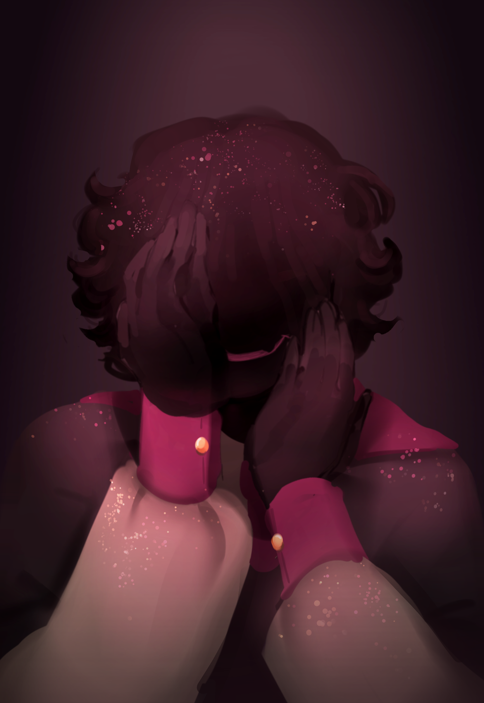
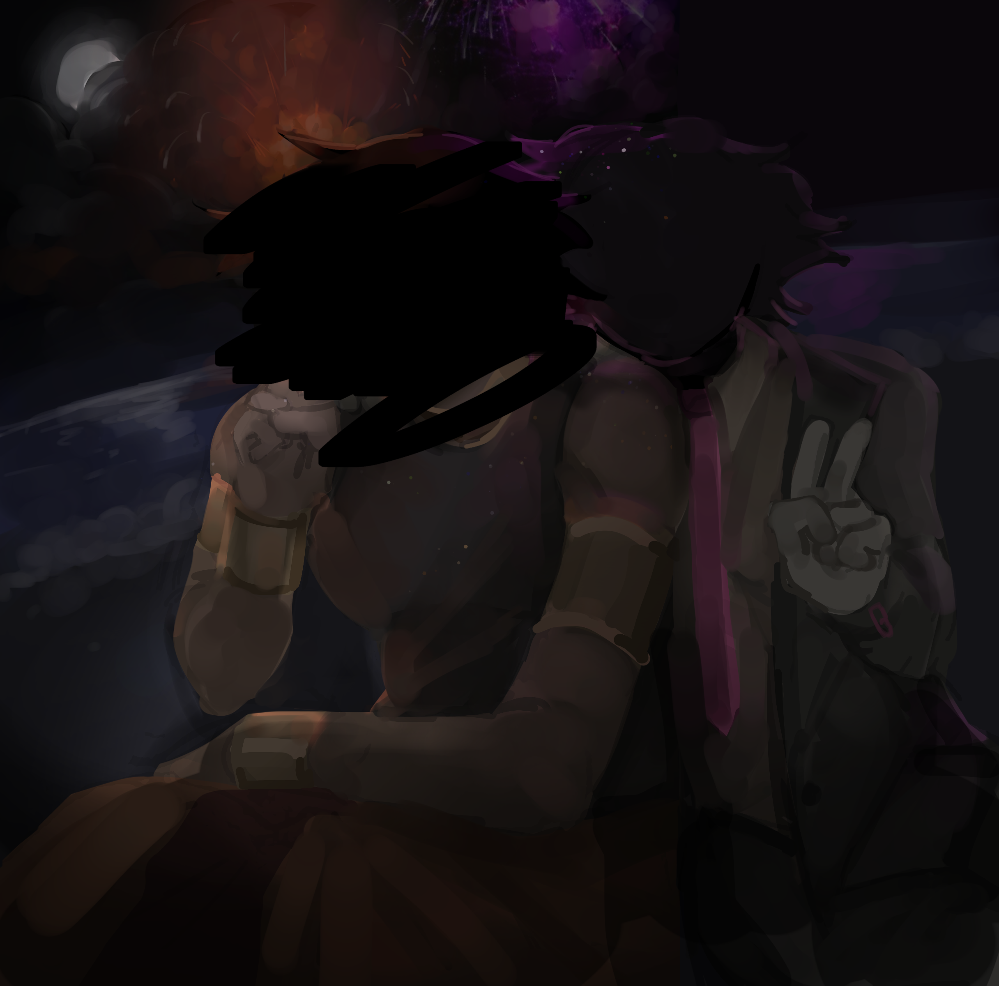
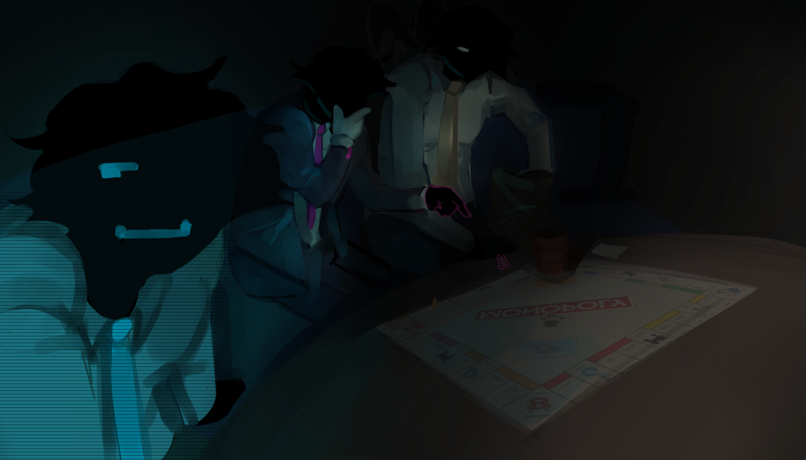
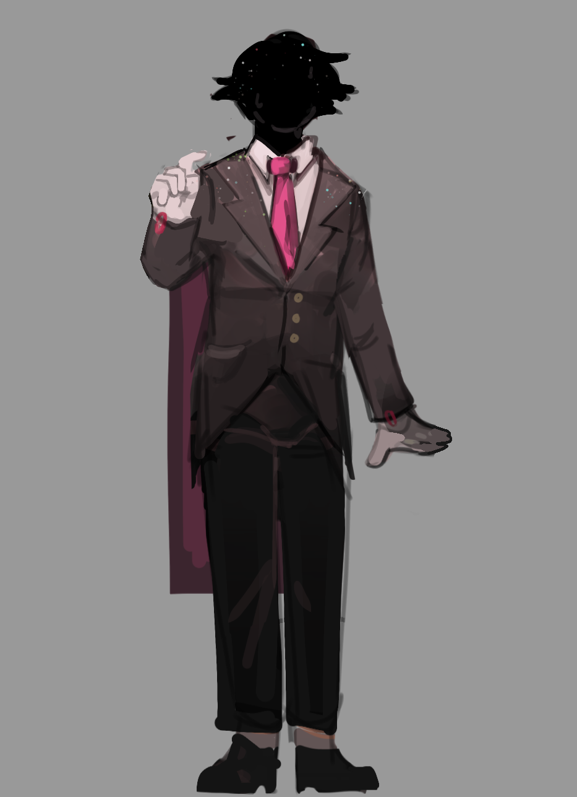

:/Фокусник/ДЕЛО 4
:/Фокусник/ДЕЛО 4
|
:/Фокусник/ДЕЛО 4
|
|
 он немного стесняется фотографироваться |
интересная копия, нарушившая закон о том, что "ни одна копия (целый файл) не может посетить нигде". хотя его файл вполне цел и много раз был проверен. других отклонений найдено не было. по идее очень схож на дело 3 из-за того, что состоит полностью из какой-то материи, а именно из магии! вполне серьёзно.
он передвигается по нигде как по коридорам, соединяющим миры, он ходит по ним через порталы, что затрачивают много сил, из-за чего он буквально может растекаться, что может быть немного.. неприятно для него. также тратит его силы использование самой магии и переживания, а сам по себе он очень нервный. по сравнению с другими копиями он спокойнее и адекватней. единственная копия на данный момент имеющая другие местоимения. они/их желательнее всего, но он/его их устраивает. история: большинство копий появляются в мире уже с написанной историей и какими-то воспоминаниями, просто сразу вписанными в историю, как и этот. но было одно отличие, появился он тогда, когда поступал в университет, но нужны были деньги. и именно для него, почему-то он только каким-то утром перед зеркалом заметил то, что он кусок чего-то.. связанного с магией, хотя для других людей в его мире они видели его так же как человека. |
факты :
- так как 4 работает фокусником, чаще всего он бывает на детских праздниках, что ему очень даже нравится, так как дети довольно.. впечатлительны и их легко удивить тем, что он умеет. кстати, из-за того, что он часто бывает на всяких детских праздниках, там много хлопушек и конфетти с блёстками, то вся его макушка головы переливается ими и немного остаётся на плечах. как бы он не старался их смыть или стряхнуть...
- ему очень нравятся видеоигры. его любимая игра - Portal 2.
- он с 6 лучшие друзья. можно назвать их внуком и дедом которые на 1й волне.
- он был знаком с большенством копий и он не плохо с ними ладит
- его главный страх это [THE VOID] эксперимент «запасной выход» если он перенерничает он может буквально лопнуть/взорваться как хлопушка, оставив только конфети. это считается смертью. но он не исчезает навсегда.
- его магия чуть ли не безгранична, но у него такая хорошая фантазия, и он не хочет создавать проблем или что то плохое. по этому самое сложное что он использует это создание порталов. кстати один портал почему то не закрылся и завис, он находится в мире шестого, им не может никто воспользоваться кроме самого фокусника. в зависшем портале ничего не видно кроме пустоты, даже вернее некого пространсва в виде комнаты 2 метра на 1 метр. но каким то образом от туда вылезает 4.
- у 4 на рукавах с двух сторон есть розовые скрепки, у 6 на одном рукаве есть золотая скрепка. это их некий глупенький символ дружбы.
:/ галерея

